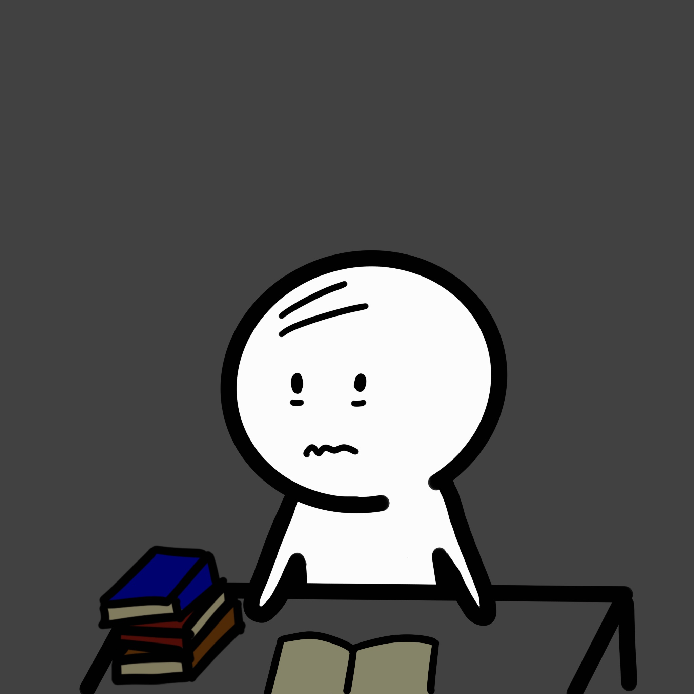
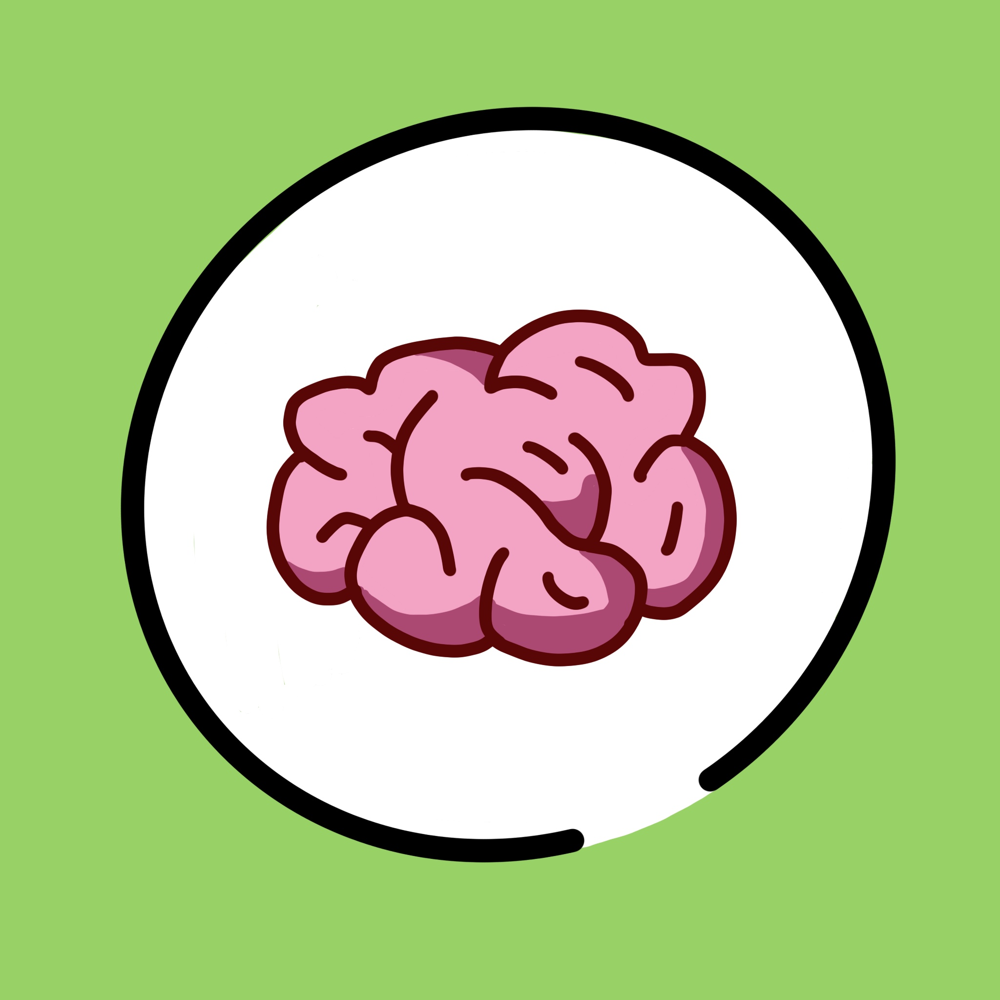
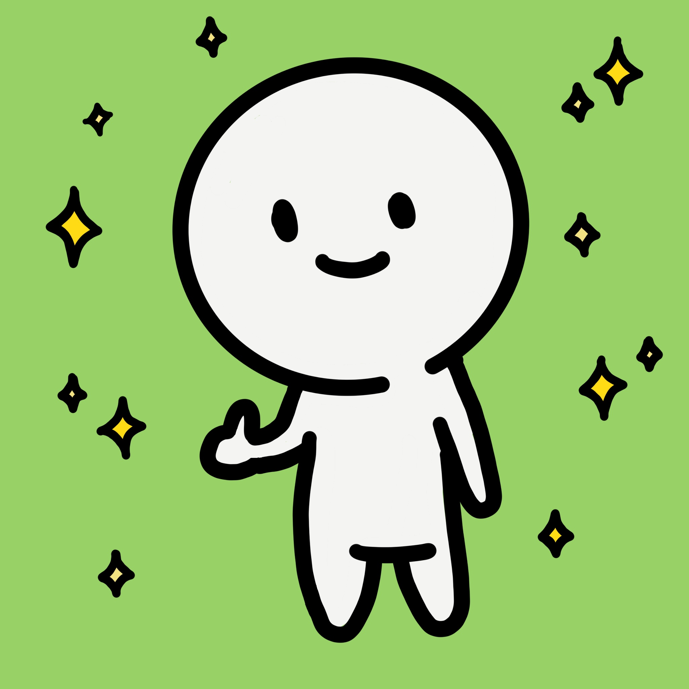

You’re stressed, your head is spinning, and you feel stuck. The material isn’t sticking, and you're just staring at a wall. It's time for an intervention.

Struck by the same screen burnout, Sprout finally decided to listen to their body.
But building that habit is difficult when deadlines loom.
IF: 90 minutes pass without a break.
THEN: Root & Roam automatically reminds you to step outside, stretch, and reconnect.
Screens drain your "directed attention." Natural environments trigger "soft fascination," which actively recharges your cognitive battery.
Stepping away activates your brain's Default Mode Network. This background processing state is where complex concepts finally "click" together.
A 15-minute walk physically pumps oxygenated blood to the hippocampus, helping lock short-term study material into long-term memory.

Automated breaks reduce the cognitive load of decision-making. Root & Roam forces a visual reset so you can return to your desk with clear eyes and renewed focus.
Download the IFTTT Recipe